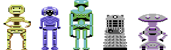

Media Archive

Radiohead Remixes
Present Tense MP3
Videotape (Mephisto Mix) MP3
Big Boots (Poison Mix) MP3
Follow Me Around MP3
Morning M'Lord MP3
As Dead As Leaves MP3
Big Boots (noVox) MP3
Videotape (Instrumental) MP3
All songs composed by Radiohead.
Produced and arranged by Pawel Osmolski.
Videotape featuring Thom Yorke on piano and vocals.
Big Boots featuring vocals by Pawel Osmolski.
Present Tense, Morning M'Lord and As Dead As Leaves-
featuring Thom Yorke on acoustic guitar and vocals.
As Dead As Leaves with Jonny Greenwood on electric guitar.
All other instrumentation performed by Pawel Osmolski.
Produced and arranged by Pawel Osmolski.
Videotape featuring Thom Yorke on piano and vocals.
Big Boots featuring vocals by Pawel Osmolski.
Present Tense, Morning M'Lord and As Dead As Leaves-
featuring Thom Yorke on acoustic guitar and vocals.
As Dead As Leaves with Jonny Greenwood on electric guitar.
All other instrumentation performed by Pawel Osmolski.
Covers
Heaven's On Fire MP3
While My Guitar Gently Weeps MP3
I Get Nervous MP3
Climbing Cycle - Unfinished MP3 Inspiration
Nice Dream MP3
Hollywood Forever Cemetery Sings composed by Father John Misty.
The Rip composed by Portishead.
Heaven's On Fire composed by The Radio Dept.
Paradise Circus composed by Massive Attack.
While My Guitar Gently Weeps composed by George Harrison.
I Get Nervous composed by Lower Dens.
Climbing Cycle is a short piano idea composed by Jonny Greenwood.
Nice Dream composed by Radiohead.
The Rip composed by Portishead.
Heaven's On Fire composed by The Radio Dept.
Paradise Circus composed by Massive Attack.
While My Guitar Gently Weeps composed by George Harrison.
I Get Nervous composed by Lower Dens.
Climbing Cycle is a short piano idea composed by Jonny Greenwood.
Nice Dream composed by Radiohead.
The Thorn Collection
Abandoned MP3
Alone MP3
It's Over MP3
No Chance MP3
Sky Fires MP3
The Dying Fairy MP3
The Fallen Angel MP3
Nalecz MP3
Mieczyslaw MP3
The Bright Chasm MP3
Unexpected Discovery - Improvisation MP3
Collection of piano works composed over the years.
Also available on SoundCloud.
All piano compositions written and performed by Pawel Osmolski.
Nocturne Cantabile and Jag recorded from cassette tape-
and performed for Music GCSE examination.
Also available on SoundCloud.
All piano compositions written and performed by Pawel Osmolski.
Nocturne Cantabile and Jag recorded from cassette tape-
and performed for Music GCSE examination.
Abandoned
Lies MP3
Burning Pain MP3
Black Rose MP3
Monkey Song MP3
Monkey Song Remix MP3
Wot Da F*ck (Did You Say To Me?) MP3
Wot Da F*ck Version 2 MP3
Access Denied MP3
Black Rose Version 2 MP3
KYD MP3
Hate - Instrumental MP3
Lust and Misery - Instrumental MP3
Dead Weight - Instrumental MP3
KYD Version 2 - Instrumental MP3
Violation - Instrumental MP3
Works from my college grunge band formed in 2001.
Produced and arranged by Pawel Osmolski.
Vocals written and performed by Emma Jane.
All instrumental tracks composed and performed by Pawel Osmolski.
Monkey Song, Wot Da F*ck, Black Rose v2 and Access Denied with Fidan Hassan on drums.
Guitars by Pawel Osmolski.
Produced and arranged by Pawel Osmolski.
Vocals written and performed by Emma Jane.
All instrumental tracks composed and performed by Pawel Osmolski.
Monkey Song, Wot Da F*ck, Black Rose v2 and Access Denied with Fidan Hassan on drums.
Guitars by Pawel Osmolski.
Chip Music
Autopilot to Cassiopeia MP3
Chipsticks Innit MP3
Meet Jimbo Jones MP3
Sprinkle MP3
Stars A Boppin' MP3
Dream MP3
Misguided Ancient MP3

Magic Nitrogene MP3
64 Agitation MP3
Fairlight - Unfinished C64 Remix MP3
Atomic Sound - AHX Archive RAR
Atomic Sound - Protracker Archive RAR
Autopilot to Cassiopeia is from the Space Explorer Polaris EP.
Dream and Misguided Ancient were composed using AHX Tracker.
Magic Nitrogene composed as a collaboration with Lana Chircop.
Spellbound and Human Race composed by Rob Hubbard.
Fairlight composed by Mike Alsop.
Atomic Sound is a pseuodonym of Pawel Osmolski.
Dream and Misguided Ancient were composed using AHX Tracker.
Magic Nitrogene composed as a collaboration with Lana Chircop.
Spellbound and Human Race composed by Rob Hubbard.
Fairlight composed by Mike Alsop.
Atomic Sound is a pseuodonym of Pawel Osmolski.
Ye Olde Projects
The Hour of Falling Ashes MP3
Labyrinth of Light MP3
Limbo MP3
The Unknown Remembered Gate MP3
Futurespect Retrology MP3
Italian Car Advert MP3
Sampling and Synthesis MP3
Tears of Love MP3
Drivestar MP3
Obsession MP3
SEOMI Evocation II MP3
Sound Bites MP3
talkSPORT Prank Call MP3
Collection of older projects composed during my school years.
The Hour of Falling Ashes was composed as a tribute to Silent Hill.
The Unknown Remembered Gate was created in collaboration with Samuel Morgan.
SEOMI is an acronym for Sawing Existence of Metallic Isolation.
Sound Bites contains film and TV clips edited to produce a fictional scene.
Drivestar, Obsession and Tears of Love were composed between 1999-2001.
The Hour of Falling Ashes was composed as a tribute to Silent Hill.
The Unknown Remembered Gate was created in collaboration with Samuel Morgan.
SEOMI is an acronym for Sawing Existence of Metallic Isolation.
Sound Bites contains film and TV clips edited to produce a fictional scene.
Drivestar, Obsession and Tears of Love were composed between 1999-2001.